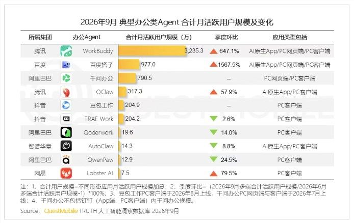
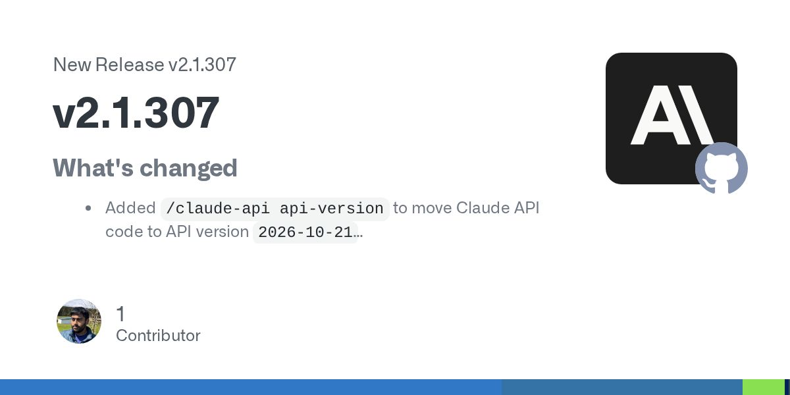
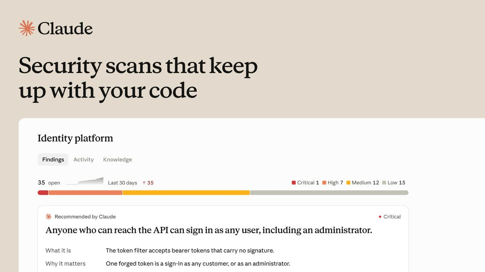
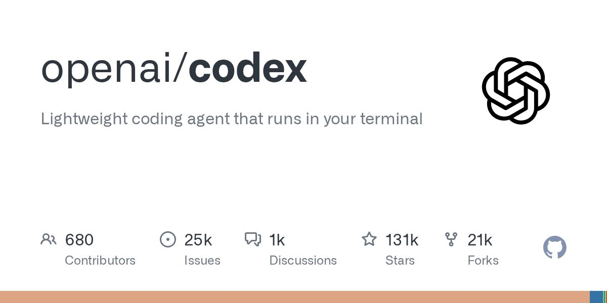
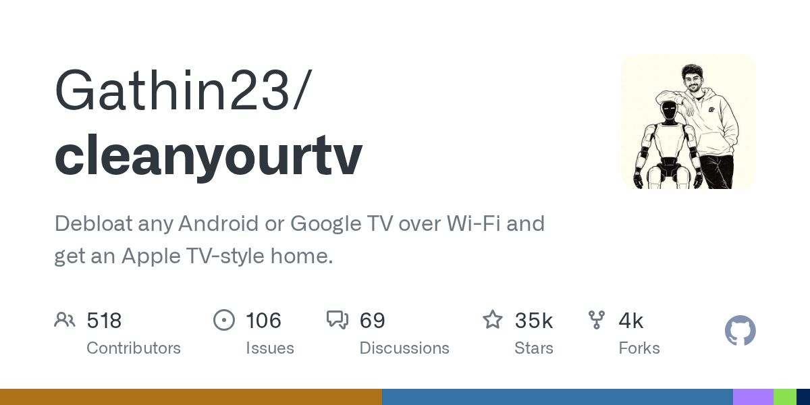
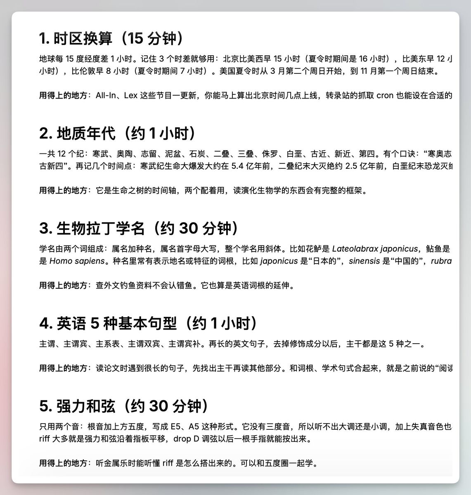

AI 日报 · 2026-10-22（周四）
时间窗口：10-21 12:55 到 10-22 12:55（台北时间）。每条都打开正文核对过日期。
今日看点
- 今日关注：Anthropic 发布 Claude Duet，一个会主动来找你的 AI 助理。 两个多月里已经有四家公司推出同类产品，可关注 AI 助理代办任务的能力。
- VibeCoding 圈今天的主题是安全。 Railway 的密钥系统被入侵，LiteLLM 安装包被投毒，PHP 曝出漏洞。使用 AI 做项目的读者可关注 API Key 风险。
- 生活应用：用 Claude Code 或 Codex 一键清掉电视广告。 相关开源项目 5 天涨到 2 万星。
今日要闻
宝玉总结了同类产品
原文正文要点
xAI 的 Grok Bot（8-11）、Meta 的 Muse（9-08）、OpenAI 的 Dots（9-29），加上今天的 Claude Duet。推文
Meta 的 Muse 用户超过 1000 万。

原文正文要点
约 25% 的用户每天都用，超过四分之一的活跃用户让 AI 代理帮自己购物。AIbase
AI 参与发现了 PHP2Shell 漏洞，可以免登录接管服务器，大约七成网站受影响。
原文正文要点
这是 OpenAI "Patch the Planet" 计划协调修复的。OpenAI 还提供了一个 Codex skill，可以用来自查网站。OpenAI｜自查 skill 推文｜宝玉中文解读
OpenAI 的模型和 Codex 将登陆 Google Cloud Model Garden。
原文正文要点
OpenAI（10-21 20:00）
ChatGPT 广告扩展到 26 个新国家，已有超过 10 万广告主用过。
原文正文要点
传闻：Anthropic 最快本周五提交招股书（S-1）。
原文正文要点
消息来自雅虎财经援引的知情人士，还没有得到官方确认。AIbase
办公 Agent 排名：WorkBuddy、百度搭子、千问办公排在前三。

原文正文要点
数据来自 QuestMobile。AIbase
工具与更新
Claude Code v2.1.307 / v2.1.308

原文正文要点
新增 /claude-api api-version，修复了一批 MCP、自动压缩上下文（autocompact）和权限相关的问题。Code Review 新增 @claude review stop 指令。Release（10-22 06:17）
Claude Security 支持持续扫描代码仓库

原文正文要点
仓库有改动就自动重新扫描。目前在 Enterprise 版公测。推文
Codex 今天发了三个 0.164.0 alpha 版本

原文正文要点
都只是预发布版本，没有写更新说明。Releases
Mistral 发布 Voxtral 3
原文正文要点
支持 50 多种语言的语音识别和语音合成，还附带一个语音 Agent SDK。TLDR AI 10-21 期
腾讯「懂了鸭」
原文正文要点
一句话就能生成绘本、动画和小游戏，面向亲子和老师。V2EX 讨论
红果短剧上线「小果AI」
原文正文要点
可以在评论区 @ 它来提问。AIbase
热门项目与玩法
CleanYourTV

原文正文要点
把一份 PROMPT.md 交给 Claude Code、Codex 或 Gemini CLI，就能清掉安卓电视的广告和预装软件，不需要 Root。10-17 创建，现在 2 万星，今天还在更新。AI工具集介绍
GitHub Trending 今日榜（单日新增星数）
原文正文要点
- ponytail（+2079）：让 Agent 像最懒的资深工程师那样少写代码
- cloudflare/security-audit-skill（+2012）：做安全审计的 skill
- orca（+1541）：同时管理多个编程 Agent
- graphify（+1433）：把代码库变成可以提问的知识图谱
V2EX 用户做的 Claude Code / Codex 周边小工具
原文正文要点
- ccx：额度用完时一键带着上下文切到另一边
- SessionMonitor：用悬浮窗查看多个会话的状态
- Agent-Shit-Cleaner：清理 Agent 留下的依赖包和构建产物，作者的 1T 硬盘被塞满了
ATBGamePort
原文正文要点
把小游戏压缩包交给 Agent，就能移植成网页版。作者判断小游戏的供给会暴增。V2EX
r/vibecoding 的两条
原文正文要点
- 一个人一周做出浏览器肉鸽游戏，已有 1700 人玩了 3000 局
- 用 Claude Code 把 1982 年的 Atari 游戏重制，做成了 NES 和 SNES 版
歸藏把 Codex 接到了电视上，可以直接对话。
原文正文要点
向阳乔木分享了"一天学会、每周都用得上"的知识提问 Prompt。

原文正文要点
V2EX 热议：「为啥你们 Vibe 的网页 AI 味儿那么重?」，173 条回复。
原文正文要点
需求与合作动态
电鸭有人在卖"远程代搭飞书多维表格客户 CRM 看板"。
原文正文要点
反映了小团队整理微信和 Excel 客户资料的需求。电鸭
V2EX 有全栈开发者想做垂直行业的"AI 工作搭子"（定制版 WorkBuddy），正在找有需求的行业方。
原文正文要点
呈现了开发者与行业方之间的合作意向。V2EX
V2EX 有人想要"通勤骑车时能跟 AI 语音聊天"的产品
原文正文要点
要求能打断、有长期记忆、能跟进待办，预算每月 20 美元以内。帖子列出了具体的功能与预算需求。V2EX
Indie Hackers 热帖讨论"帮客户做配置和替客户干活的边界在哪"。
原文正文要点
有 137 条评论，可供理解服务范围与报价时参考。IH 首页（帖子没有显示日期，只能当参考）
安全排查与升级需求
原文正文要点
PHP 老站需要升级（V2EX：公司就我一个技术，项目全在 php7 上），Railway 用户需要轮换密钥。涉及排查、密钥轮换与版本升级需求。
今日推荐方向
个人 AI 助理的任务与授权边界
- 切入角度
- 参考 Duet 产品页中咖啡店老板的早晨：简报、健康许可证（$640 等待批准）、融资 PPT 和经营看板，了解哪些任务可以交给 AI、哪些操作需要本人批准。
- 参考素材
- 适合读者
- 关注生活与办公助理的 AI 初学者、小团队经营者
AI 编程项目的密钥与依赖安全
- 切入角度
- 结合 OpenRouter Key 被用于调用 Opus 5.5 的求助帖、Railway 密钥系统入侵、LiteLLM 安装包投毒和 PHP 漏洞，梳理适合初学者的 5 分钟自查清单。
- 参考素材
- 适合读者
- 使用 AI 编程工具搭建项目的初学者
使用 AI 工具清理电视广告

- 切入角度
- 了解 CleanYourTV 的流程：同一个 Wi-Fi 下连接电视，把 PROMPT.md 交给 Agent，对比清理前后的效果。
- 参考素材
- GitHub 仓库（2 万星，可以一键恢复）
- AI工具集介绍
- 即刻 AI探索站上歸藏的 guizang TV 改版（2 天前的帖子，只能当辅助素材）
- 适合读者
- 希望了解安卓电视清理流程的设备使用者
补充阅读方向
- 切入角度
- V2EX 上「Vibe 的网页为什么 AI 味那么重」，可比较改进前后的效果。
- 参考素材
- 适合读者
- 希望进一步了解相关讨论的读者。
未能核验的来源 展开查看
超出 24 小时
- Cursor Changelog：最新一条是 10-16
- Google AI Blog：最新一条是 10-21 12:00，刚好超出时间窗口
- 量子位：最新一条是 10-21 10:37
- Ben's Bites：最新一条是 10-20
- 阮一峰周刊：周更，最新是 10-16
- Anthropic News：最新一条是 10-21 的人事新闻，与本期关联较弱，Duet 使用官方推文和产品页
打不开或被限流
- r/ClaudeAI：返回 429
- hnrss 的 AI 关键词 feed：返回 502，改用 HN 首页和高分帖替代
- OpenAI 文章页：返回 403，改用官方 RSS 正文摘要
- 电鸭首页：内容靠 JS 渲染，分类页有验证码，改用
feed/latest.xml
没有可核验的日期
- 掘金 AI 热榜：API 里没有发布时间
- Indie Hackers 首页：没有显示日期
- 即刻 AI探索站：只有 1 条 08:12 的帖子在窗口内，其余标的是"1天前"或"2天前"，无法精确判断
今日窗口内内容少或关联弱
- Product Hunt：窗口内只有 Koi（一个 Mac 工具集合 App）
- 少数派：只有派早报，相关信息已从其他源覆盖
- Simon Willison：只有 PHP 安全和小游戏，已覆盖
这次没有抓取
机器之心（周报）、The Rundown（邮件订阅）、HF Papers、今日热榜
按清单的剔除名单跳过
AI Viral Insights、smol.ai、HelloGitHub、36氪、程序员客栈、即刻主站、r/LocalLLaMA 等